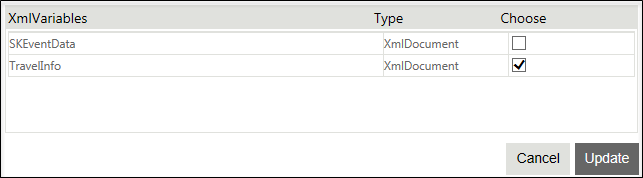

No
XmlVariables for ChildWorkflow Property window
You can specify the XmlVariables to be passed to the child workflow in this property window. To open this window, click the button for the 'XmlVariables for ChildWorkflow' property.
The following image shows the XmlVariables for ChildWorkflow property dialog box:

The window has a grid that lists the parent workflow XMLvariables that can be passed to the child workflow. It has the following columns –XmlVariables, Type, and Choose. You can click the Choose check box to select the XmlVariable(s). You can click Update to set selected the XmlVariable(s) to be passed.
Note: For XMLVariables of type XMLDocument the Internal Storage should be the same for both the parent and the child workflow.